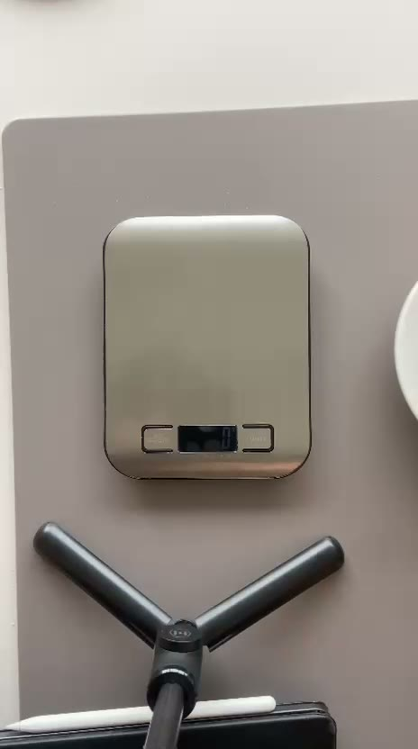
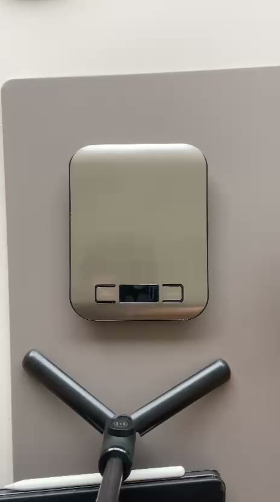

Talíř 1 · rozpoznáno
Segedínský guláš s knedlíkem
0gzbylo na talíři
0 %snědeno
První pilot: naše škola v Hejčíně
Olomouc
Tohle je jeden školní oběd.
Jídelna jich denně vydá stovky.
Téměř třetina uvařeného jídla skončí v koši.
Návrh pilotní sestavy · snímání talířů + váha
Tohle je oběd ve školní jídelně.
31%
uvařeného jídla ve školních jídelnách skončí v koši
Hack Prague 2026
600 000Kč ročně
A takových jídelen je v Česku
8 891
denně vaří pro 1,6 milionu dětí
1 tečka = 1 školní jídelna, výdejna nebo vývařovna
Zdroje: Prague Food Waste 2024 (Zachraň jídlo, Mendelova univerzita), výsledky studie (Echo24, Blesk), sborník From Plate To Waste 2025 (Mendelova univerzita).
Co
na talíři zbyl knedlík
Kolik
+150 g v kbelíku
Ubereme jen knedlík.
48 % odpadu jsou zbytky z talířů. A ty ovlivnit umíme.
Odkud to víme: výzkum Prague Food Waste 2024 · pozorování v naší jídelně (pás) · rozhovor s mentorem
ještě před vysypáním
skutečný přírůstek v kbelíku
pokud se pořadí při vysypání nezmění
Cíl: bez zastavování talířů
Ukázková data


Kamera nad pásem
Čekám na talíř…
Talíř 1 · rozpoznáno
0gzbylo na talíři
0 %snědeno
Talíř 2 · rozpoznáno
0 g · pod 10 g = dojedeno
2 talíře · 0 g zbytků · 1 dojedený
Tak začínají data.1 den2 týdny1 měsíc
34kg
zbytků z talířů
3 145 Kč za suroviny
dojedeno 38 % se zbytkem
Nejčastěji se vrací
Špenát s bramborem a vejcem
47 % porce
Každý den
150 g
zbyl knedlík
Každý měsíc
Hned
Například o 30 % méně zbytků z talířů znamená pro školu až
180 000Kč
ročně
Vedoucí a kuchařky
Úpravy navrhují s námi. Práci navíc nemají.
Ředitel
A má ekologický projekt. Pilot je zdarma.
Žáci a učitelé
Obrazovka v jídelně ukáže, co se snědlo.
Městská část
Praha 4 už jídelny zapojila do Zachraň oběd.
Brno · den, kdy děti vážily samy
Když děti vidí, co vyhodí, vyhodí míň.
80kg19kg
Už jsme volali
Kuchařkám to práci nepřidá. Teď potřebujeme souhlas ředitele.
Zdroj: Mendelova univerzita, Jak šetřit jídlem ve školních jídelnách (2025), s. 19 (Brno, čočka nakyselo: běžný den 80 kg, v den vážení 19 kg).
V českých školních jídelnách jsme automatické měření nenašli.
−50%
kuchyňského odpadu v IKEA Česko, i na Zličíně
kamera a váha u koše, Winnow
34 000Kč
1 jídelna · 6 týdnů + iterace
vše z Hack Prague
ceny ověřené s odkazem, zbytek náš odhad · podrobně v příloze
kamera Raspberry Pi nad pás · USB váha pod kbelík · váha na gastronádoby
ruční ověření táců (DPP) · poděkování jídelně
AI a server · LTE připojení na 5 měsíců
plakáty · žebříček tříd · odměna vítězné třídě
asi 10 %
listopad–prosinec
souhlas ředitele, hygiena a GDPR, instalace
leden–únor
měřit → upravit → měřit znovu
únor–březen
další kolo úprav, dokud odpad klesá
30. 3. 2027
výsledky pilotu
do 10. 5. 2027
zpráva, další jídelna
Tři největší rizika
Pilot zdarma, kuchařky nic navíc, data patří jídelně.
Kamera jen na pás, bez obličejů. Kryty mimo přípravu jídla.
Při nejistotě společná dávka. Celková váha sedí vždy.
Matice všech rizik, položkový rozpočet a KPI jsou v příloze.
Tobias
research a data, mentoři
Ondřej
technika, prototyp, demo a prezentace
Nástroje, které jsme použili
Co jsme po mentoringu změnili
první pilot · Olomouc
pilot
všechny její školy
hlavní město
8 891 jídelen
IKEA na Zličíně snížila odpad o polovinu.
My to dáme každé školní jídelně, za cenu levné kamery a váhy.
Dojedeno
Děkujeme
Demo zatím neběží
V Terminálu spusť:
cd ~/Documents/hack-prague-2026/demo && python3 tools/serve.py
Slajd se sám připojí. Mezerníkem lze pokračovat dál.
Vedoucí jídelny
Data místo odhadu, každý den.
Ředitel
Měřitelný výsledek pro školu i rodiče.
Městská část
Praha 4 už jídelny zapojila do Zachraň oběd.
Proč do toho jídelna půjde
fotka talíře ještě před vysypáním
skutečný přírůstek v kbelíku
sledujeme cestu talíře a čas vysypání
při souběhu společná dávka
Cíl: bez zastavování talířů
Výzkumníci vážili ručně, asi týden na každé škole
1 týden s daty
zbytek školního roku bez dat
Brno · čočka nakyselo
80kg
běžný den
19kg
den, kdy děti vážily
Když se měří, vyhazuje se méně.
Zdroje: Prague Food Waste 2024 (Zachraň jídlo, Mendelova univerzita); Mendelova univerzita: Jak šetřit jídlem ve školních jídelnách (2025), s. 19.
Lidé a příroda
People challenge
Enviro challenge
Zdroje: Prague Food Waste 2024 (Zachraň jídlo, Mendelova univerzita), výsledky studie (Echo24, Blesk). Špenát „skoro polovina“ je náš výpočet: 190 g z porce kolem 400 g.
Na pásu, ještě před vysypáním: vidí, co zbylo.
Kuchařka vysype talíř do kbelíku.
Z dnešního menu, i jeho část: knedlík, omáčku, maso.
Dojedeno12:41
Segedínský guláš – knedlík
150 g
talíř ↔ přírůstek váhy · nejisté = společná dávka
Nádoby z výdeje se zváží zvlášť a zapíšou se jako nevydané porce.
Živá ukázka prototypu
Kdo jsme
Výzva
Vlastní téma · městská udržitelnost
gastroodpad ve školních jídelnách
Místo
Pilot u nás ve škole
Olomouc-Hejčín · pak Praha
Pro koho
Školní jídelny
vedoucí a kuchařky, žáci, zřizovatelé
Jméno Příjmení
Role
Jméno Příjmení
Role
Jméno Příjmení
Role
Jméno Příjmení
Role
nevydané pokrmy
zbytky z talířů
příprava
5–9 % žáků si zaplacený oběd vůbec nevyzvedne.
Špenát s bramborem a vejcem: zbude skoro polovina porce, 190 g z ~400 g.
Polévku jí jen pětina žáků.
Zdroje: Prague Food Waste 2024 (Zachraň jídlo, Mendelova univerzita), výsledky studie (Echo24, Blesk). Podíl špenátu je náš výpočet: 190 g z porce kolem 400 g.
listopad–prosinec 2026
souhlasy, hygiena a GDPR, instalace, test na tácech
leden–únor 2027
měření → úpravy → měření
únor–březen 2027
další kola úprav, dokud odpad klesá
30. 3. 2027
výsledky pilotu
do 10. 5. 2027
zpráva, další jídelna v Olomouci, Praha
6 týdnů v jedné jídelně
výchozí stav bez zásahu s vedoucí jídelny upravíme porce složek, recepty, polévky po úpravě
Iterujeme: úprava → 2 týdny měření → znovu, dokud odpad z talířů klesá. Počítáme se 2 koly do galavečera.
Dopad
nízkáPravděpodobnostvysoká
obava z kontroly a z práce navíc
Pilot zdarma, žádná práce navíc, data patří jídelně. Souhlas ředitele předem.
HACCP, kamera ve škole, výživové normy
Kamera jen na pás, bez obličejů. Omyvatelné kryty mimo přípravu jídla. Úpravy v rámci norem.
talíře se slijí, vysype se jich víc najednou
Přiřazení podle pořadí, při nejistotě společná dávka. Celková váha sedí vždy.
Hlavní KPI
gramy na strávníka a den
Výchozí stav
? g
změříme v týdnech 1–2
Cíl
−10 %
příklad
Nevydané porce za den
Vedlejší: úspora za suroviny
60 000Kč
ročně při −10 % · škola s 500 žáky
příklad jen suroviny, skutečná úspora je vyšší
Kvalita měření: podíl táců správně přiřazených k váze · ověříme ručním vážením
Impakt a udržitelnost
Méně gastroodpadu. Jídelna konečně ví, co děti nejedí.
Systém, data a návyky v jídelně. Další krok: žáci a učitelé, soutěž tříd.
8 891 jídelen v ČR. Další jídelna v Olomouci, pak Praha.
Oponentura · podrobný rozpočet pilotu
| Položka | Počet | Kč | Stav ceny |
|---|---|---|---|
| Materiál | 18 413 | ||
| Raspberry Pi Zero 2 W | 2 ks | 978 | OVĚŘENO |
| Raspberry Pi Camera Module 3 | 2 ks | 1 792 | OVĚŘENO |
| Kabel kamery pro Pi Zero | 2 ks | 200 | ODHAD |
| Napájecí zdroj 12,5 W | 2 ks | 400 | OVĚŘENO |
| microSD karta 32 GB | 2 ks | 698 | OVĚŘENO |
| Krabička a držák kamery nad pás | 2 ks | 800 | ODHAD |
| LED lampička s klipem | 2 ks | 506 | OVĚŘENO |
| Váha 60 kg s USB pod kbelík (PCE-PB 60N) | 1 ks | 6 121 | OVĚŘENO |
| Plošinová váha 150 kg na nádoby z výdeje | 1 ks | 1 518 | OVĚŘENO |
| Sběrná stanice: Raspberry Pi 5, zdroj, karta | 1 ks | 2 200 | ODHAD |
| Montážní materiál, lišty, omyvatelný kryt | 1 ks | 1 200 | ODHAD |
| Monitor do jídelny pro žáky (použitý) | 1 ks | 2 000 | ODHAD |
| Položka | Počet | Kč | Stav ceny |
|---|---|---|---|
| Služby | 3 750 | ||
| AI model Haiku 5.5 + server na 5 měsíců | 1× | 1 500 | VÝPOČET |
| LTE router + data na 5 měsíců | 1× | 2 250 | ODHAD |
| Propagace | 3 000 | ||
| Plakáty, žebříček tříd, odměna vítězné třídě | 1× | 3 000 | ODHAD |
| Lidé | 5 800 | ||
| Validační vážení táců (DPP) | 24 h | 4 800 | ODHAD |
| Poděkování personálu jídelny (poukazy) | 1× | 1 000 | ODHAD |
Ceny OVĚŘENO s odkazem (31. 10. 2026), ODHAD = náš odhad. Přepočteno z rozpocet_pilotu.xlsx (2 jídelny) na 1 jídelnu. Pilot: kamera Raspberry Pi, v demu mobil.